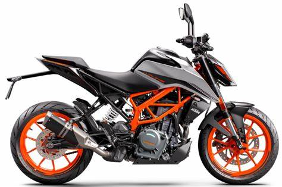

MOTOS Y SU CILINDRADA
BMW 1000SR
KAWASAKI z650
KTM 390
CFMOTO 250
INFORMACION
En esta seccion podemos encontrar algunas cilindradas que existen en el mundo, y como saben se diferencia por su tecnologia y motor, que mayor sea el motor, mayor es la velocidad final que tienen.